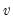
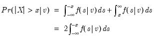
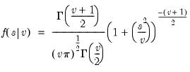
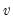

@tdist Element Functions Tail probabilities of the Student’s distribution. Syntax: @tdist(x, v) x: number v: number, Return: number Probability that a t-statistic with  degrees of freedom exceeds in absolute value (two-sided p-value).  due to symmetry, where  Examples = @tdist(-12.71, 1) returns 0.04998.... Cross-references See also @ctdist, @dtdist, @qtdist, and @rtdist.


distribution.
x: numberProbability that a t-statistic with  degrees of freedom exceedsin absolute value (two-sided p-value).